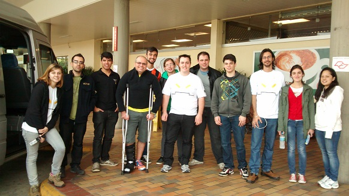

A equipe foi criada em 2010 pelo aluno e atual capitão da equipe Marcos Lavarda que, após observar a insatisfação dos alunos de Engenharia Eletrônica, o que levava a uma alta evasão do curso, tomou a iniciativa de fundar a equipe. Com o auxílio do professor Rubens Farias (Rubão) e dos departamentos da UTFPR desenvolveu projetos, buscou patrocínios e novos membros.
Apesar de todos as dificuldades a equipe seguiu em frente, atualmente, após 4 anos de batalha, conseguimos nosso espaço na universidade. Tal espaço é essencial para o desenvolvimento dos projetos já existentes, bem como o de novos projetos.

Além disso, a equipe Crossbots está classificada entre as 10 melhores da modalidade robô de combate Hobbyweight na Winter Challenge 2014, conquistamos o 7º
lugar na modalidade sumô e nosso robô seguidor de linha apresentou melhora de 80% no tempo em que realiza o percurso de 19m, completando-o em menos de 30s.
O processo seletivo da equipe consiste em avaliar o interesse dos participantes bem como a habilidade de buscar conhecimento de forma alternativa, além de
apresentar os desafios.

Os membros da equipe possuem uma função principal em determinado projeto, apesar disso podem livremente ajudar em outras áreas e outros projetos, o que torna a equipe mais unida e eficiente. Os membros relatam que participar da Crossbots gerou um aumento na motivação em terminar o curso que escolheram e que não possuem dúvidas de que realmente gostam do que escolheram. Tal motivação vêm do desenvolvimento de projetos multidisciplinares em grupo, o que gera queda na evasão dos cursos além de uma experiência enriquecedora para a vida pessoal e profissional dos membros da Crossbots.
Alex Torezin Mendonça - Eletrônica
Alexandre Calado de Oliveira - Mecânica
Aurimar Kent Dicati Oliveira - Mecânica
Augusto Souza - Mecânica
Cesar Ribas - Marketing
Damaris Mendes Ferreira - Eletrônica
Eluana Sievert - Eletrônica
Everton Ramires de Oliveira - Eletrônica
Fabio Martins - Mecânica
Jaison dos Santos Junior - Mecânica
Jonas Zaduski - Mecânica
Leticia Baleiro - Mecânica
Luís Paulo Custódio - Eletrônica
Marcos Lavarda - Eletrônica
Marcos Vinicius Cardoso - Mecânica
Mateus Felipe Paludo - Mecânica
Matheus Henrique - Eletrônica
Matheus J. Ruzyk - Eletrônica
Rodrigo Latfmann - Eletrônica
Samuel Zaduski - Eletrônica
Tauan Marinho - Eletrônica
Thais Felipe Greca - Mecânica


Gostaríamos de agradecer a todos que acompanharam o nosso trabalho... Leia mais »

A Crossbots participou em São Paulo no dia 8 de Outubro da Freescale Cup... Leia mais »

A Crossbots participou de umas das maiores competições de robótica... Leia mais »